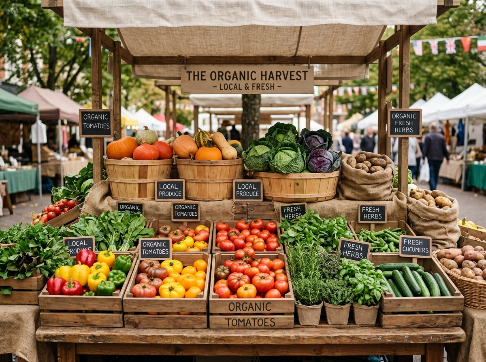

The Agricultural Marketing Department was constituted to establish an efficient, transparent, and farmer-friendly marketing system for agricultural and horticultural produce.
Through a network of over 650 regulated APMC Mandis, 450+ Sufal Bangla retail hubs, multi-chamber cold storage facilities, and modern electronic auction platforms (e-NAM), the Department protects farmers from exploitation while safeguarding consumer interests.
To double farmer price realizations through direct trade, eliminate post-harvest losses, and modernize agricultural supply chains.
State-of-the-art Agmark certified testing laboratories ensuring quality grading and chemical residue checks.

Transforming primary agricultural marketing into a resilient, technology-driven ecosystem.
Supervision of APMC checkposts, electronic weighing scales, transparent bidding, and timely payment settlements directly to farmer bank accounts.
Expanding Sufal Bangla mobile vans and stationary counters to bring farm-fresh vegetables directly from fields to urban households at fair prices.
Financial subsidies for multi-commodity cold chain infrastructure, refrigerated transport vehicles, and modern packhouses under flagship schemes.
Operating regional laboratories for quality inspection, grading, and AGMARK certification for edible oils, ghee, honey, and spices.
Access the complete district APMC office directory, regional mandi contacts, or submit feedback to our public helpdesk.